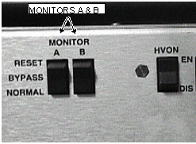

Operating Documentation
Direction 5440001-3, Rev# 6
Signa HDxt Service Methods
Module Version 1.0, Version Date 5/15/07
Operating Documentation |
| Required Persons | Preliminary Reqs | Procedure | Finalization |
|---|---|---|---|
| 1 | Not Applicable | 10 mins | Not Applicable |
System restoration is the process of restoring the system back to its original condition after performing the various tests like the Body and Head RF output power adjustments etc.
| Last Update | 03/01/2006 |
Verify the system is not scanning and the scan desktop icon is displaying the “Idle” message.
If SSM is present, see Illustration 1. On the front panel of the SSM place the 2 (two) power MONITOR switches (A and B) to the bottom Normal position.
Illustration 1: SSM FRONT PANEL SWITCHES ENABLED

If Driver Module is present, see Illustration 2. On the front of the Driver module Do the following:
SW2 in the UP (TR Enable) position.
SW3 in the UP (DD Enable) position.
SW4 in the UP (MC Enable) position.
Illustration 2: Driver Module Switches

Remove all test equipment.
Verify the Body Heliax cable is connected.
Verify the Head Heliax cable is connected.
Re-install the cabinet covers.
| NOTE: | WHENEVER THE “CALMODE” CV IS CHANGED A TPS RESET MUST BE DONE BEFORE ATTEMPTING TO SCAN. THIS IS NECESSARY IN ORDER TO SET THE MGD BACK INTO IMAGING MODE. FAILURE TO DO THIS WILL RESULT IN THE LOSS OF RECEIVE SIGNAL AND AUTOPRESCAN FAILURES. |
Perform a TPS Reset to set the MGD back to imaging mode so that the system will be able to scan. Failure to do this will result in Autoprescan failures due to a loss of receive signal.
Re-Enable theStopping and Starting UTNS3 or TNS.
Successfully complete one body scan.
Successfully complete one head scan.
No finalization steps.